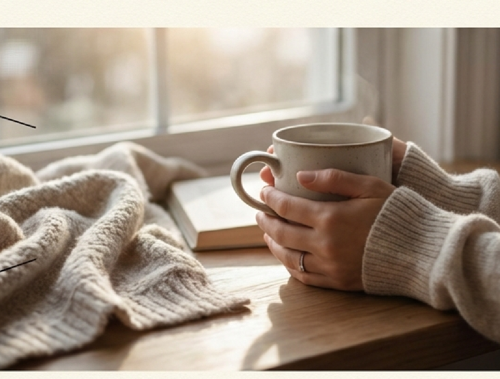
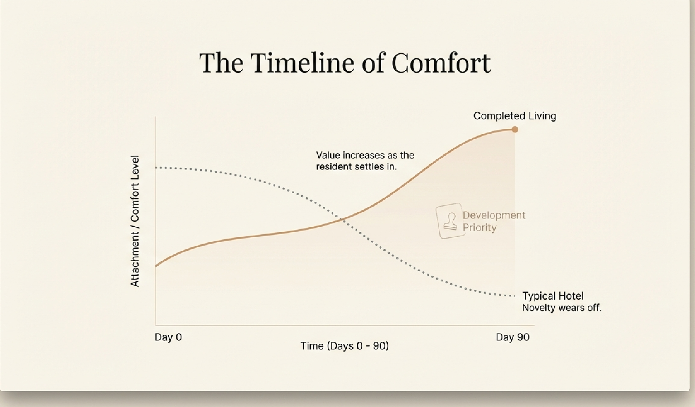
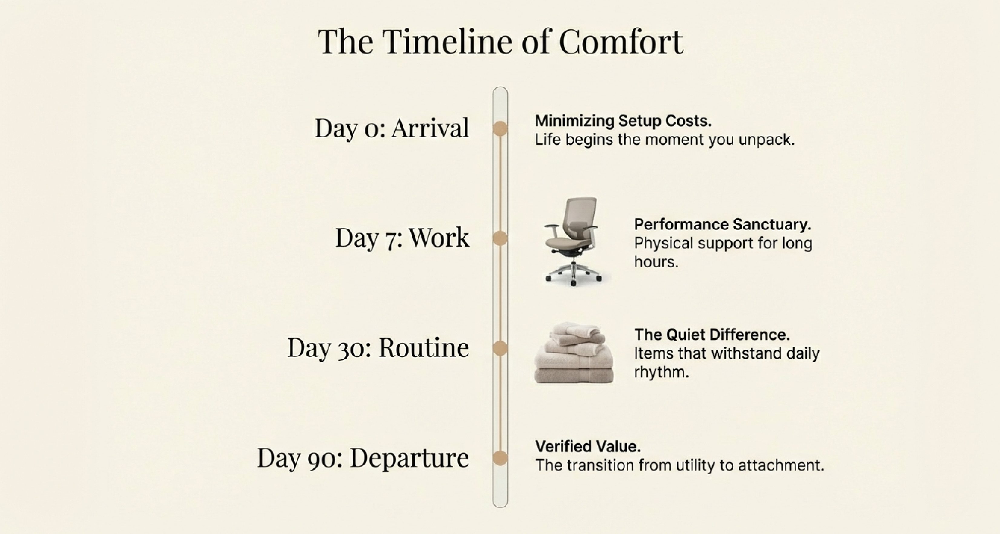
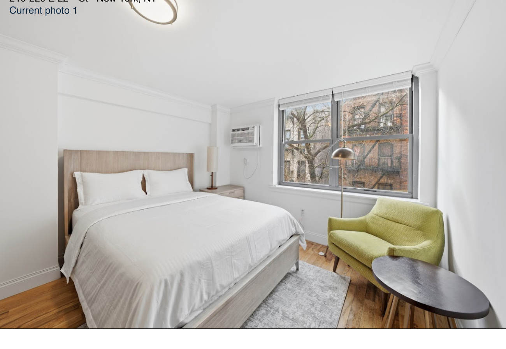
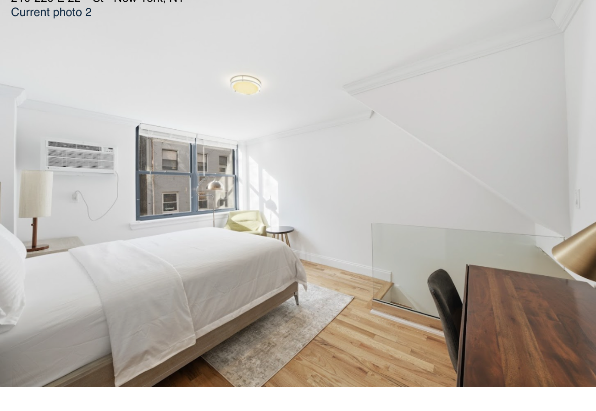
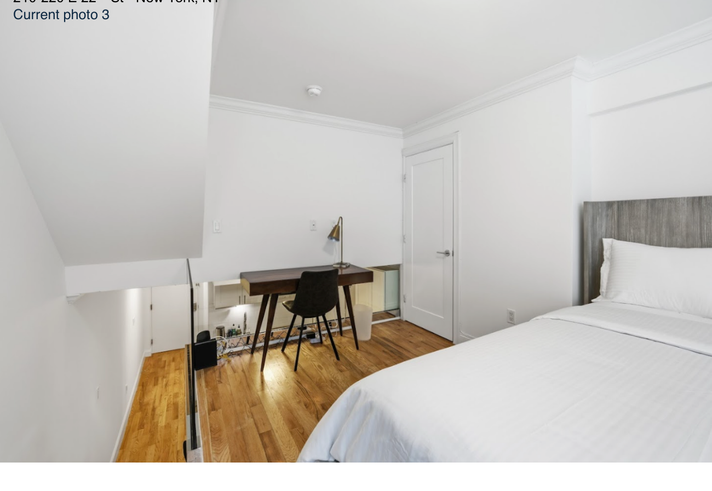
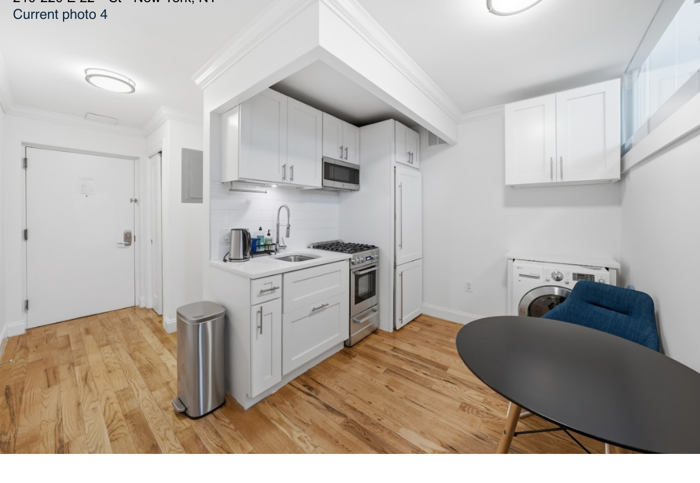
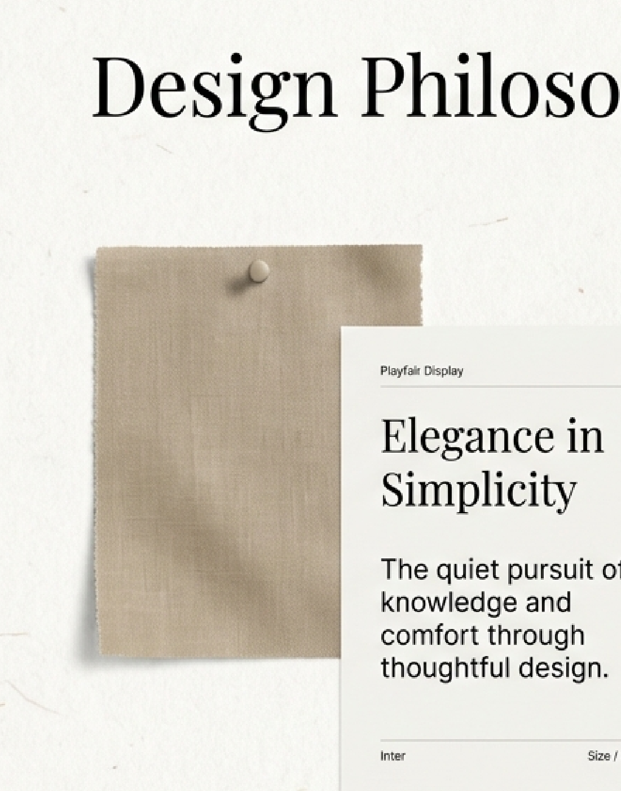

Not a hotel. Not a rental. A new base for living defined by "quiet differences."
Focus on the experience of living comfort, not just the products.
A temporary stopover lacking the rhythm of daily life. You cannot build a rhythm. Novelty wears off.
Completed Living. Arrival means life begins immediately. A monthly rental offering a fully resolved home from Day 1.
An empty box requiring logistics, setup time, and long-term commitment. Rentals require immense setup effort.
"True comfort is not found in grand gestures or symbolic luxury. It is found in the micro-interactions of daily life: the texture of a towel, the ergonomics of a chair, the tactile feedback of a toaster."

Value increases as the resident settles in. Unlike the hotel, this space grows with you.


We do not select based on brand hype. We select based on how an object integrates into the flow of life.




Frame feedback and participation as a premium privilege, not a chore. We seek your realizations from living here.
A curated selection from the items you lived with — chosen based on your feedback. Products verified by your own experience, available to continue in your next home.
Apply for Monitor Program
Monthly rates vary based on duration and availability. Extended stays may qualify for adjusted rates.
Check Availability Apply for Monitor Program